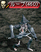
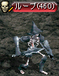
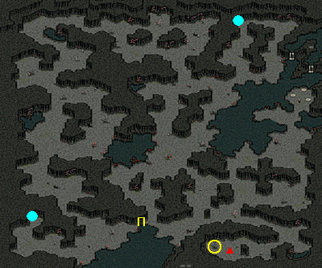

一般クエスト Lv400〜499
| セントロードの噂 | |
|---|---|
エールキースに言われた通り、セントロードの調査のため、農村ガリムトに派遣されているバルベルトに会いに行こう。 バルベルトに、セントロードではないかと推定される洞窟内で、出口を探し出さなければいけないと言われた。ミルトリム記念公園の近くにある入口から入って、洞窟の出口を探してみよう。 セントロードと推定される洞窟の出口を発見した。この事をバルベルトに報告しよう。 バルベルトが言うには、洞窟の出口が存在したことから考えても、王国の追い手から逃げてきたグリーク教信者たちが身を隠した場所である確率が高いらしい。再び洞窟に行って、内部の壁や床などを調査して、グリーク教の高位神官だった信者の手がかりを探してみよう。 聖具と推定される品物を見つけた。バルベルトに見せよう。 アルタミコが発見されたことを考えても、背教者がこの洞窟を通じて逃走したというバルベルトから聞いた学者の仮説は正しいようだ。しかし、神聖物から聖なるパワーが感じられない点に疑問が残るため、調査が必要だという。エールキースにアルタミコを渡しに行こう。 |
|
| 受諾場所 | 神聖都市アウグスタ エールキース（97.77） |
| 受諾条件 | Lv410 キャンセル不可 |
| 報酬 | - |
| 農村ガリムト | 連作クエスト セントロードの噂 → アルタミコ ⇒ 村の生計 少女のための鎮魂歌 ジェソ・ジーコフ ジェド・ジーコフ ビルベルトのわがまま ⇒ 洞窟の主 → キリアムの力 ⇒ 遅すぎた後悔 → 破門されたベルートス バルベルト（81.86）へ |
| ミルトリムの道 / シュトラセラト入口付近 | セントロード Ｂ１への入口は3箇所ある。 ?隠し入口=洞穴（214.55） ⇔ ?隠し出口＝蓮花（266.46） ?隠し入口=洞穴（110.236） ⇔ ?隠し出口＝岩（120.347） ?通常入口=移動ポータル（155.279） ⇔ ?通常出口=移動ポータル（110.394）  ?隠し入口=洞穴（214.55）から入り、?隠し出口＝蓮花（266.46）へ  |
| セントロード Ｂ１ | ?隠し出口＝蓮花（266.46）をクリック  |
| 農村ガリムト | バルベルトへ |
| セントロード Ｂ１ | 十字架（253.192）をクリック  |
| 農村ガリムト | バルベルトへ |
| 神聖都市アウグスタ | エールキースへ |
| アルタミコ | |
|---|---|
エールキースの指示通り、魔法陣を使って他のアルタミコも探してみよう。 魔法陣付近のアルタミコを回収して帰ろう。 アルタミコをすべて探し出した。これをエールキースのところに持って行って報告しよう。 エールキースの手紙を農村ガリムトにいるバルベルトに渡そう。 |
|
| 受諾場所 | 神聖都市アウグスタ エールキース（97.77） |
| 受諾条件 | Lv410 キャンセル不可 |
| 報酬 | 経験値1150万 |
| セントロード Ｂ１ | 連作クエスト セントロードの噂 → アルタミコ 魔方陣（254.195）をクリック、対岸へワープ 十字架（278.291）をクリック  |
| 神聖都市アウグスタ | エールキースへ |
| 農村ガリムト | バルベルト（81.86）へ |
| 村の生計 | |
|---|---|
アルトから、薬草について詳しい妹のアイルネインに会ってみるように言われた。村の北側の家に住んでいるアイルネインを訪ねよう。 アンゼリカは、水辺などにたくさん育つと言う。アンゼリカを探すために、洞窟内の水辺を調査してみよう。 アンゼリカを手に入れた。アイルネインのところに戻って、アンゼリカを見せよう。 アイルネインは、洞窟で発見される薬草が、村の生計を支えてくれるはずだと言う。アルトに報告しよう。 アルトに、村の人々が安全に薬草を採取できるように洞窟中のモンスターたちを退治してほしいと頼まれた。薬草の辺りをウロウロしているモンスターのクローラーとホップクローラーを退治しよう。 かなりのモンスターを退治した。アルトのところに戻って報告しよう。 |
|
| 受諾場所 | 農村ガリムト アルト（43.79） |
| 受諾条件 | Lv420 |
| 報酬 | 経験値700万 |
| 農村ガリムト | 連作クエスト セントロードの噂 → アルタミコ → 村の生計 アイルネイン（41.9）へ |
| セントロード Ｂ１ | 薬草（72.378）をクリック  |
| 農村ガリムト | アイルネインへ アルトへ |
| セントロード Ｂ１ | クローラー（Lv430）、ホップクローラー（Lv435）を100匹倒す |
| 農村ガリムト | アルトへ |
| 少女のための鎮魂歌 | |
|---|---|
洞窟の出口周辺を彷徨っていたメイが、失くしてしまったネックレスを探し出して欲しいと頼まれた。洞窟に入ってメイのネックレスを探してみよう。 メイのネックレスを見つけた。洞窟の外で待っているメイにネックレスを返そう。 自分が既にこの世の存在ではないと分かっていないメイは、自分のことを待っている母メアリーンに、ネックレスを渡してほしいと言う。メイの頼み通り、お母さんにメイのネックレスを渡してあげよう。 メアリーンは、亡き娘メイが安らかに眠れるように手伝ってほしいという。バルベルトを訪ねて相談してみよう。 バルベルトは、彼女の遺骨と浄化の聖水を利用すれば、彷徨っている霊魂を呼び出して成仏させることができると言う。メイを成仏させるために、洞窟に入って子供の遺骨を探し出そう。 子供の遺骨を探し出した。遺骨を持ってメアリーンのところに戻ろう。 |
|
| 受諾場所 | ミルトリムの道 / シュトラセラト入口付近 メイ（207.53） |
| 受諾条件 | Lv430 |
| 報酬 | 経験値620万 |
| セントロード Ｂ１ | 連作クエスト セントロードの噂 → アルタミコ → 少女のための鎮魂歌 サンクラブ（Lv452）を倒す |
| ミルトリムの道 / シュトラセラト入口付近 | メイへ |
| 農村ガリムト | メアリーン（66.15）へ バルベルト（81.86）へ |
| セントロード Ｂ１ | 遺骨（276.69）をクリック  |
| 農村ガリムト | メアリーンへ |
| ジェソ・ジーコフ | |
|---|---|
ジェソ・ジーコフの実験に必要な変異フロッグが逃げてしまったらしい。変異フロッグを捕まえるためには、麻酔薬を混ぜた餌が必要だという。洞窟亀を退治して、洞窟亀の卵を手に入れてくるように頼まれた。洞窟亀の卵をジェソ・ジーコフに渡すと、小さな団子にしてもらえるので、小さな団子を使って逃げた変異フロッグを捕まえよう。捕まえる時は、変異フロッグが死んでしまわないように、やさしく叩こう。 変異フロッグをすべて捕まえることに成功した。ジェソ・ジーコフのところに戻って、変異フロッグを渡そう。 ジェソ・ジーコフは、双子の兄さんが自分の邪魔をしているようだと言う。復讐のために、農村ガリムトの雑貨店で甘い蜂蜜を手に入れてこよう。 甘い蜂蜜を手に入れた。ジェソ・ジーコフが言った石筍を探して甘い蜂蜜を塗ったら、虫壷を開いて置いて帰ろう。 虫たちを振り撒くことに成功した。ジェソ・ジーコフのところに戻って報告しよう。 この双子の兄弟の行動は、どうも危険に感じる。農村ガリムトにいるバルベルトに報告しよう。 |
|
| 受諾場所 | セントロード Ｂ１ ジェソ・ジーコフ（190.23） |
| 受諾条件 | Lv430 |
| 報酬 | ジェド・ジーコフ未済 経験値520万 ジェド・ジーコフクリア済 経験値670万 |
| セントロード Ｂ１ | 連作クエスト セントロードの噂 → アルタミコ → ジェソ・ジーコフ ジェド・ジーコフと同時には受けられない。 洞窟亀（Lv443）を倒す ジェソ・ジーコフへ、5回話す ▲変異フロッグ（Lv1）Zinのタゲを取る。倒さないように注意、2分湧き。  ジェソ・ジーコフへ |
| ガリムト武器・雑貨店 | ミランダ（13.11）へ、5万G払う |
| セントロード Ｂ１ | 石筍（134.468）をクリック  ジェソ・ジーコフへ ジェド・ジーコフ未済の場合は、ここで終了 （経験値520万） |
| 農村ガリムト | ジェド・ジーコフクリア済の場合は、バルベルト（81.86）へ （経験値670万） |
| ジェド・ジーコフ | |
|---|---|
ジェド・ジーコフは、青い原石がめり込んでいる石筍の周辺にいる多量の虫たちのために、青い原石を採るのが大変だという。ケーキを石筍の周辺にばら撒いて、石筍から出てくる虫たちをすべて退治したら、青い原石を手に入れよう。 石筍の周辺にケーキをばら撒いた。集まってきた虫たちを一気に退治して、虫がこれ以上発生しないようにしたら、青い原石を手に入れよう。 青い原石を手に入れた。ジェド・ジーコフのところに戻って青い原石を渡そう。 ジェドは、双子の弟が自分の邪魔をしているようだと言う。復讐のために、洞窟スパイダーを捕まえて洞窟スパイダーの毒袋を手に入れたあと、ジェドが言っていた変異フロッグの檻の周辺に振り撤こう。 変異フロッグが檻の中から逃げ出すようにした。ジェド・ジーコフのところに戻って報告しよう。 この双子の兄弟の行動は、どうも危険に感じる。農村ガリムトにいるバルベルトに報告しよう。 |
|
| 受諾場所 | セントロード Ｂ１ ジェド・ジーコフ（20.462） |
| 受諾条件 | Lv430 |
| 報酬 | ジェソ・ジーコフ未済 経験値520万 ジェソ・ジーコフクリア済 経験値670万 |
| セントロード Ｂ１ | 連作クエスト セントロードの噂 → アルタミコ → ジェド・ジーコフ ジェソ・ジーコフと同時には受けられない。 ケーキ5個を用意しておく。 ケーキは古都ブルンネンシュティグのバリカス（47.57）から750Gで購入できる。 石筍（134.468）をクリック、ケーキ5個を消費 鋏昆虫の群れ（Lv430）が5匹出現、倒す 石筍（134.468）をクリック ジェド・ジーコフへ 洞窟スパイダー（Lv455）を倒す 変異フロッグ（195.23）へ ジェド・ジーコフへ ジェソ・ジーコフ未済の場合は、ここで終了 （経験値520万） |
| 農村ガリムト | ジェソ・ジーコフクリア済の場合は、バルベルト（81.86）へ （経験値670万） |
| ビルベルトのわがまま | |
|---|---|
ビルベルトは、セントロードを調査した際に、自分の聖具を失くしてしまったらしい。ビルベルトに言われた通りに洞窟に入ってビルベルトの聖具を探し出そう。 ビルベルトの聖具を探し出した。洞窟の外で待っているビルベルトに聖具を渡してあげよう。 ビルベルトが、洞窟内のモンスターを退治して、自分の聖具に聖なる力を集めて欲しいと頼んできた。聖なる力を吸いこむソウルナイトとソウルロストを退治して聖なる力を集めよう。 ビルベルトの聖具に、聖なる力を十分に集めた。洞窟の外で待っているビルベルトに渡そう。 |
|
| 受諾場所 | ミルトリムの道 / シュトラセラト入口付近 ビルベルト（111.264） |
| 受諾条件 | Lv440 |
| 報酬 | 経験値780万 |
| セントロード Ｂ１ | 連作クエスト セントロードの噂 → アルタミコ → ビルベルトのわがまま ソウルナイト（Lv460）を倒す |
| ミルトリムの道 / シュトラセラト入口付近 | ビルベルトへ |
| セントロード Ｂ１ | ソウルナイト（Lv460）、ソウルロスト（Lv476）Zinを60匹程倒す |
| ミルトリムの道 / シュトラセラト入口付近 | ビルベルトへ |

| 遅すぎた後悔 | |
|---|---|
バルベルトから、洞窟に関する新たな情報収集のために、港街シュトラセラトにいるミゲルを訪ねるよう言われた。 ミゲルに、死んで怨霊となってしまった仲間たちを退治してほしいと頼まれた。背教者の秘密通路 Ｂ１を徘徊しているディブロ、ルーブ、デルローブを退治しよう。 死んで怨霊となってしまった仲間たちを退治した。ミゲルのところに戻って報告しよう。 ミゲルから渡されたミゲルの日誌を農村ガリムトにいるバルベルトに届けよう。 |
|
| 受諾場所 | 農村ガリムト バルベルト（81.86） |
| 受諾条件 | Lv450 |
| 報酬 | 経験値870万 高級復活巻物3個 |
| 港街シュトラセラト | 連作クエスト セントロードの噂 → アルタミコ → 遅すぎた後悔 → 破門されたベルートス ミゲル（138.135）へ |
| セントロード Ｂ１ | ディブロ（Lv460）、ルーブ（Lv460）、デルローブ（Lv460）を倒す    |
| 港街シュトラセラト | ミゲルへ |
| 農村ガリムト | バルベルトへ |
| 洞窟の主 | |
|---|---|
洞窟の奥深くで出会ったキリアムは、力の源を奪われて、力を失っているらしい。彼の力を回復させるために、セントロード Ｂ２にあるキリアムの棲み処に咲く蓮華と輝く泉に咲く赤い花から、生命の玉を手に入れてキリアムに渡してあげよう。 キリアムが言っていた生命の玉を手に入れた。これを渡してあげよう。 生命の玉を川辺に咲く蓮華と赤い花のところに、1つずつ埋めてこよう。 生命の玉をすべて埋めた。キリアムと話をしよう。 キリアムに、力を回復しなければいけないから、領域に入ってきた悪霊を退治してほしいと頼まれた。キリアムに頼まれた通りに、洞窟の奥深くにいるフォースナイトとフォースロストを退治しよう。 悪霊たちをすべて退治した。キリアムのところに戻って報告しよう。 |
|
| 受諾場所 | セントロード Ｂ１ キリアム（99.69） |
| 受諾条件 | Lv460 |
| 報酬 | 経験値970万 |
| セントロード Ｂ２ | 連作クエスト セントロードの噂 → アルタミコ → 洞窟の主 → キリアムの力 蓮華（73.18）と赤い花（62.149）をクリック    |
| セントロード Ｂ１ | キリアムへ 蓮華（92.64）と赤い花（102.66）をクリック    キリアムへ |
| セントロード Ｂ２ | フォースナイト（Lv486）、フォースロスト（Lv500）Zinを30匹倒す |
| セントロード Ｂ１ | キリアムへ |
| キリアムの力 | |
|---|---|
キリアムに、力を回復しなければいけないから、領域に入ってきた悪霊を退治してほしいと頼まれた。キリアムに頼まれた通りに、洞窟の奥深くにいるフォースナイトとフォースロストを退治しよう。 悪霊たちをすべて退治した。キリアムのところに戻って報告しよう。 キリアムが言っていた強力な悪霊ダークサイファーを退治した。ダークサイファーの棲家で輝く岩石を調査してみよう。 キリアムが、人間に騙されて失くしてしまった生命の地玉を手に入れた。キリアムのところに戻って報告しよう。 このまま悪霊たちを退治していても、数が減っているとは思えない。キリアムを助ける為には、もっと根本的な問題を解決する必要がありそうだ。問題解決のため、調査してみよう。 |
|
| 受諾場所 | セントロード Ｂ１ キリアム（99.69） |
| 受諾条件 | Lv460 繰返し可 |
| 報酬 | 経験値60万+2000万 ドラゴンの心臓5個 |
| セントロード Ｂ２ | 連作クエスト セントロードの噂 → アルタミコ → 洞窟の主 → キリアムの力 フォースナイト（Lv486）、フォースロスト（Lv500）Zinを100匹倒す |
| セントロード Ｂ１ | キリアムへ Lv540未満の場合は、ここまでを繰り返し可。 （経験値60万） 最後までクリアすると繰り返しクエストは受けられなくなる。 |
| セントロード Ｂ２ | Lv540以上や途中でダークサイファーを倒しに行くと、次のクエストに進む。 ▲ダークサイファー（Lv490）Zinを倒す、（106.231）付近に約4時間47分湧き。 全属性魔法抵抗90％以上、ミラーカーズ攻撃あり。 HPが1/2と1/3になった時、サイファー（Lv490）とダークスプリンタ（Lv490）4匹が湧く。 岩石（99.224）をクリック    |
| セントロード Ｂ１ | キリアムへ （経験値2000万 ドラゴンの心臓5個） |
| 破門されたベルートス | |
|---|---|
バルベルトは、罪を犯して逃走したベルートスが、村の南側の洞窟に隠れているという情報を得たそうだ。洞窟内に隠れているベルートスを捜して退治しよう。 ベルートスは、魔法陣を使って逃走したようだ。バルベルトに報告しよう。 バルベルトの聖具を利用して魔法陣の捜索を行い、ベルートスを退治しよう。 ベルートスを退治して、ベルートスの研究日誌を手に入れた。バルベルトに報告しよう。 |
|
| 受諾場所 | 農村ガリムト バルベルト（81.86） |
| 受諾条件 | Lv480 |
| 報酬 | 経験値1300万 |
| セントロード Ｂ２ | 連作クエスト セントロードの噂 → アルタミコ → 遅すぎた後悔 → 破門されたベルートス ベルートス（Lv490）を倒す  |
| 農村ガリムト | バルベルトへ |
| セントロード Ｂ２ | 魔方陣（142.91）をクリック 3つあるうちの東の魔方陣が正解、Ｂ１右下の島の上側へワープ   |
| セントロード Ｂ１ | ▲ベルートス（Lv490）Zinを倒す、HP回復1万1000あり  |
| 農村ガリムト | バルベルトへ |